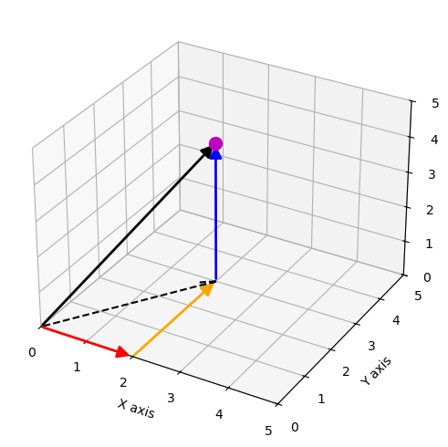
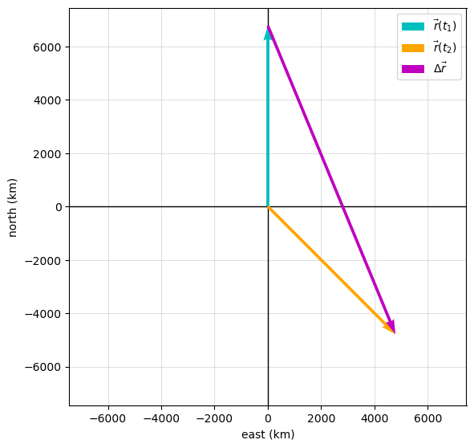
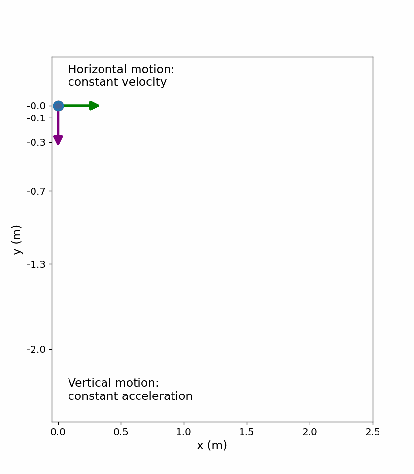
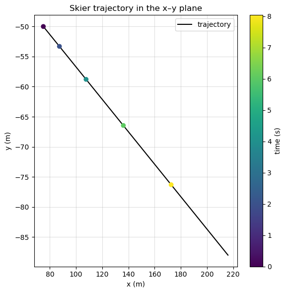
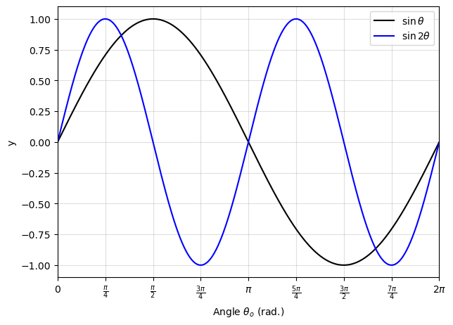
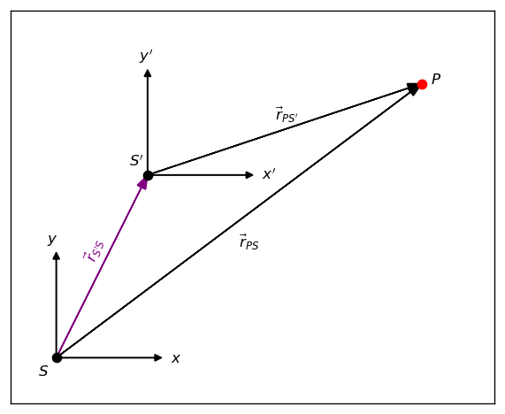
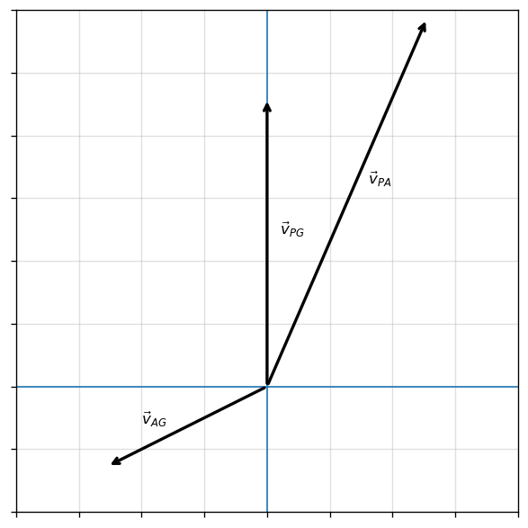

4. Motion in 2D and 3D#
May 29, 2026 | 8663 words | 43 min read
Chapter roadmap
This chapter extends one-dimensional kinematics into two and three dimensions. Position, displacement, velocity, and acceleration are now treated as vectors, but the basic ideas from Chapter 3 still apply component by component.
As you read, focus on three questions:
Can I break a vector motion problem into independent components?
Can I identify which quantities are shared between the component motions?
Can I recombine components to describe the full motion of an object?
These ideas will be used to analyze projectile motion, circular motion, and relative motion.
4.1. Displacement and Velocity Vectors#
This audio is AI-generated.
4.1.1. Displacement Vector#
To describe motion in 2D and 3D, we must first define a coordinate system, including a convention of axes. Recall that the sign of the acceleration due to gravity was determined by the convention that we chose. We usually use the Cartesian coordinate system to locate a particle at point \(P(x,y,z)\) in 3 dimensions. If the particle is moving , the variables \(x,y,z\) are functions of time \(t\).
The position vector \(\vec{r}(t)\) locates the point P at time t from the origin, by
Fig. 4.1 A 3-D coordinate system with a particle at position \(P\left[x(t),\, y(t),\,z(t)\right]\). Figure Credit: OpenStax: Displacement and Velocity Vectors.#
Fig. 4.1 shows the position vector \(\vec{r}(t)\) for a particle located at a time \(t\). Note that the orientation of the coordinate system follows the right-hand rule.
Checkpoint
If \(\vec{r}(t_1)\) and \(\vec{r}(t_2)\) are both measured from the origin, why does \(\Delta \vec{r}\) point from the first position to the second position rather than from the origin?
We can now define the 3D displacement vector \(\Delta \vec{r}\) as the difference between the position vector \(\vec{r}(t_2)\) at time \(t_2\) and the initial position vector \(\vec{r}(t_1)\) at time \(t_1\), or
Three dimensional vector addition is performed in the same way as in 2D, by adding the corresponding components or graphically by using the head-to-tail method.
Fig. 4.2 The displacement \(\Delta \vec{r} = \vec{r}(t_2) - \vec{r}(t_1)\) is the vector from \(P_1\) to \(P_2\). Figure Credit: OpenStax: Displacement and Velocity Vectors#
See the python code below that demonstrates how to plot a 3D vector in matplotlib.
import numpy as np
import matplotlib.pyplot as plt
from matplotlib.patches import FancyArrowPatch
from mpl_toolkits.mplot3d import proj3d
# Custom class to draw true 3D arrows (matplotlib does not support these natively)
class Arrow3D(FancyArrowPatch):
def __init__(self, xs, ys, zs, mutation_scale=20, lw=2, arrowstyle="-|>", **kwargs):
super().__init__((0, 0), (0, 0),mutation_scale=mutation_scale,lw=lw, arrowstyle=arrowstyle, **kwargs)
self._verts3d = xs, ys, zs
def do_3d_projection(self, renderer=None):
xs, ys, zs = proj3d.proj_transform(*self._verts3d, self.axes.M)
self.set_positions((xs[0], ys[0]), (xs[1], ys[1]))
return np.min(zs)
# Set up the 3D plotting environment
fig, ax = plt.subplots(figsize=(8, 6), dpi=100,
subplot_kw=dict(projection="3d"))
# Define the vector components and endpoints
x0, y0, z0 = 0, 0, 0 # vector tail
u, v, w = 2, 3, 4 # vector components
x1, y1, z1 = u, v, w # vector head
# Draw the vector and its component projections
ax.add_artist(Arrow3D([x0, x1], [y0, y1], [z0, z1], color="k"))
ax.add_artist(Arrow3D([x0, x1], [y0, y0], [z0, z0], color="r"))
ax.add_artist(Arrow3D([x1, x1], [y0, y1], [z0, z0], color="orange"))
ax.add_artist(Arrow3D([x1, x1], [y1, y1], [z0, z1], color="b"))
# Plot the x-y vector
ax.quiver(x0, y0, z0, u, v, 0, color="k",
ls="--", arrow_length_ratio=0.1)
ax.plot(x1, y1, z1, "mo", ms=10, zorder=5) # mark the endpoint
# Formatting
ax.set_xlim(0, 5); ax.set_ylim(0, 5); ax.set_zlim(0, 5)
ax.set_xlabel("X axis"); ax.set_ylabel("Y axis"); ax.set_zlabel("Z axis")
plt.show()

4.1.1.1. Example Problem: Polar Orbiting Satellite#
Exercise 4.1
The Problem
A satellite is in a circular polar orbit around Earth at an altitude of \(400\ {\rm km}\), meaning it passes directly over the North and South Poles. What are the magnitude and direction of the displacement vector from when the satellite is directly over the North Pole to when it is at latitude \(-45^\circ\)?
The Model
The satellite is modeled as a point moving along a circular polar orbit around Earth. The displacement is not the distance traveled along the orbit; it is the straight-line vector from the initial position to the final position. The origin is placed at the center of Earth, with \(+\hat{j}\) pointing north and \(+\hat{i}\) pointing toward the equator on the side of the orbit. With this coordinate choice, the satellite starts directly over the North Pole and ends at latitude \(-45^\circ\).
The Math
The position vectors are measured from the center of Earth, so the orbital radius is the sum of Earth’s radius (\(6370\ {\rm km}\)) and the satellite altitude.
At the North Pole position, the satellite lies entirely along the positive \(y\) direction.
At latitude \(-45^\circ\), the position vector is resolved into components using the latitude angle measured from the equatorial direction in the orbital plane.
Substituting the orbital radius into the component form gives the final position vector.
The displacement vector is found by subtracting the initial position vector from the final position vector.
The magnitude of the displacement is found from the Pythagorean theorem applied to the vector components.
The direction is found from the inverse tangent of the \(y\) component divided by the \(x\) component.
The negative angle means the displacement points below the positive \(x\) axis, or \(67.5^\circ\) south of east.
The Conclusion
The displacement from the North Pole position to the latitude \(-45^\circ\) position is
Its magnitude is \(1.25\times10^4\ {\rm km}\), and it points \(67.5^\circ\) south of east. This is a straight-line displacement between the two positions, not the distance traveled along the circular orbit.
The Verification
The Python check computes the two position vectors, subtracts them to form the displacement, and then evaluates the magnitude and angle using the same vector operations used in the analytical solution. The printed statements are written to identify each physical quantity clearly.
# Verification of polar orbit displacement problem
import numpy as np
import matplotlib.pyplot as plt
# Given values
R_earth = 6370.0 # radius of Earth in km
h = 400.0 # satellite altitude in km
latitude_final = -45.0 # final latitude in degrees
# The orbital radius is measured from the center of Earth.
r_orbit = R_earth + h
# Position vectors (x is east, y is north)
r_initial = np.array([0.0, r_orbit])
r_final = r_orbit*np.array([
np.cos(np.radians(latitude_final)),
np.sin(np.radians(latitude_final))
])
# Displacement vector, magnitude, and direction.
delta_r = r_final - r_initial
delta_r_mag = np.linalg.norm(delta_r)
theta = np.degrees(np.arctan2(delta_r[1], delta_r[0]))
# Print results
print(f"The orbital radius is {r_orbit:.0f} km.")
print(f"The displacement vector is ({delta_r[0]:.0f} i-hat {delta_r[1]:+.0f} j-hat) km.")
print(f"The magnitude of the displacement is {delta_r_mag:.3e} km.")
print(f"The displacement points {abs(theta):.1f} degrees south of east.")
# Create a vector plot
fig, ax = plt.subplots(figsize=(6, 6))
# Plot axes and vectors
ax.axhline(0, lw=1,color='k',zorder=2)
ax.axvline(0, lw=1,color='k',zorder=2)
ax.quiver(0, 0, r_initial[0], r_initial[1], color='c', zorder=5,
angles='xy', scale_units='xy', scale=1, label=r'$\vec{r}(t_1)$')
ax.quiver(0, 0, r_final[0], r_final[1], color='orange', zorder=5,
angles='xy', scale_units='xy', scale=1, label=r'$\vec{r}(t_2)$')
ax.quiver(r_initial[0], r_initial[1], delta_r[0], delta_r[1], color='m', zorder=5,
angles='xy', scale_units='xy', scale=1, label=r'$\Delta\vec{r}$')
# Formatting
ax.set_aspect('equal', adjustable='box')
lim = 1.1 * r_orbit
ax.set_xlim(-lim, lim)
ax.set_ylim(-lim, lim)
ax.set_xlabel("east (km)")
ax.set_ylabel("north (km)")
ax.grid(True, alpha=0.4)
ax.legend()
plt.tight_layout()
plt.show()
The orbital radius is 6770 km.
The displacement vector is (4787 i-hat -11557 j-hat) km.
The magnitude of the displacement is 1.251e+04 km.
The displacement points 67.5 degrees south of east.

4.1.2. Velocity Vector#
Previously, we defined the velocity in 1D through the derivative of \(x(t)\). To expand it to 2D or 3D, we simply replace \(x(t) \rightarrow \vec{r}(t)\) to get
The vectors \(\vec{r}(t)\) and \(\vec{r}(t + \Delta t)\) represent instantaneous states of the displacement vector \(\vec{r}\) at two times. The path of a particle located by the vector is the resultant (difference) vector \(\Delta \vec{r}\), which connects from head-to-head (see Fig. 4.3).
Fig. 4.3 A particle moves along a path given by the gray line. In the limit as \(\Delta t \rightarrow 0\), the velocity vector becomes tangent to the path of the particle. Figure Credit: OpenStax: Displacement and Velocity Vectors.#
The velocity vector \(\vec{\rm v}\) can also be written in components, where each component is now time-dependent (\(v_x(t),\ v_y(t),\ v_z(t)\)). Mathematically, the progression from the displacement to the velocity vector is given by
Checkpoint
At one instant, does the velocity vector point toward the next position, along the path, or from the origin to the particle?
where
The average velocity \(\bar{v}\) was described as a vector in the previous chapter, and there is a 2D or 3D equivalent given as
Typesetting the Velocity Vector
To make distinction between the velocity vector \(\vec{\rm v}\) and its components (\(v_x,\ v_y,\ v_z\)), we use the roman font command \rm. This is a convention just to make things clearer.
4.1.2.1. Example Problem: Calculating the Velocity Vector#
Exercise 4.2
The Problem
The position function of a particle is
\(\vec{r}(t) = (2.0t^2)\ \hat{i} + (2.0 + 3.0t)\ \hat{j} + 5.0\ \hat{k}\ {\rm km}.\) (a) What is the instantaneous velocity vector and speed at \(t = 2.0\ {\rm s}\)? (b) What is the average velocity between \(t = 1.0\ {\rm s}\) and \(t = 3.0\ {\rm s}\)?
The Model
The particle moves in three-dimensional Cartesian coordinates. Instantaneous velocity is found from the rate of change of the position vector, while average velocity over a finite interval is found from the displacement during that interval divided by the elapsed time. Each component can be evaluated independently and then recombined into a vector. Because the \(x\) position is quadratic in time and the \(y\) and \(z\) positions are linear in time, only the \(x\) component of velocity changes with time.
The Math
The instantaneous velocity is defined as the time derivative of the position vector.
Differentiating the position function component by component gives the velocity function.
(a) The instantaneous velocity at \(t=2.0\ {\rm s}\) is found by substituting that time into the velocity function.
The speed is the magnitude of the instantaneous velocity vector.
(b) The average velocity over the interval from \(t_1=1.0\ {\rm s}\) to \(t_2=3.0\ {\rm s}\) is the displacement divided by the elapsed time.
The endpoint position vectors are found by substituting both times into the position function.
The displacement is found by subtracting the first endpoint from the second endpoint.
Dividing this displacement by the elapsed time gives the average velocity.
Symbolic Differentiation in Python
SymPy can differentiate symbols instead of numbers. If you write each component of \(\vec{r}(t)\) as a symbolic expression in \(t\), then diff(...) returns the derivative exactly. After that, you can substitute a specific value like \(t=2.0\) using .subs(t, 2.0) and convert to a float with float(...).
This is especially useful when \(\vec{r}(t)\) is complicated and you want to avoid algebra mistakes.
The Conclusion
At \(t=2.0\ {\rm s}\), the instantaneous velocity is
and the speed is \(9.9\ {\rm km/s}\). The average velocity between \(1.0\ {\rm s}\) and \(3.0\ {\rm s}\) is also \((8.0\hat{i} + 3.0\hat{j} + 5.0\hat{k})\ {\rm km/s}\). In this interval, the average velocity equals the instantaneous velocity at the midpoint because the velocity is a linear function of time.
The Verification
The Python check evaluates the analytical derivative at \(t=2.0\ {\rm s}\) and independently computes the average velocity from the endpoint position vectors. This confirms that the two velocities match for the chosen interval.
# Verification of velocity vector problem
import numpy as np
# Define the position function in km.
def r(t):
return np.array([2.0*t**2, 2.0 + 3.0*t, 5.0*t])
# Times in seconds.
t1 = 1.0
t2 = 3.0
t_eval = 2.0
# Instantaneous velocity from the analytical derivative, in km/s.
v_inst = np.array([4.0*t_eval, 3.0, 5.0])
speed = np.linalg.norm(v_inst)
# Average velocity from the displacement over the time interval, in km/s.
v_avg = (r(t2) - r(t1))/(t2 - t1)
print(f"At t = {t_eval:.1f} s, the instantaneous velocity is ({v_inst[0]:.1f} i-hat + {v_inst[1]:.1f} j-hat + {v_inst[2]:.1f} k-hat) km/s.")
print(f"At t = {t_eval:.1f} s, the particle's speed is {speed:.1f} km/s.")
print(f"From t = {t1:.1f} s to t = {t2:.1f} s, the average velocity is ({v_avg[0]:.1f} i-hat + {v_avg[1]:.1f} j-hat + {v_avg[2]:.1f} k-hat) km/s.")
# Verification of velocity vector problem
import numpy as np
import sympy as sp
def array_from_sympy(expressions, variable, value):
"""Evaluate a list of SymPy expressions and return a NumPy array."""
return np.array([float(expr.subs(variable, value)) for expr in expressions])
# Symbolic variable.
t = sp.Symbol('t', real=True)
# Symbolic position components in km.
x_t = 2.0*t**2
y_t = 2.0 + 3.0*t
z_t = 5.0*t
r_t = [x_t, y_t, z_t]
# Symbolic velocity components in km/s.
v_t = [sp.diff(component, t) for component in r_t]
# Evaluate instantaneous velocity at t = 2.0 s.
t_eval = 2.0
v_inst = array_from_sympy(v_t, t, t_eval)
speed = np.linalg.norm(v_inst)
# Average velocity from t1 to t2.
t1 = 1.0
t2 = 3.0
r1 = array_from_sympy(r_t, t, t1)
r2 = array_from_sympy(r_t, t, t2)
v_avg = (r2 - r1)/(t2 - t1)
print(f"At t = {t_eval:.1f} s, the instantaneous velocity is ({v_inst[0]:.1f} i-hat + {v_inst[1]:.1f} j-hat + {v_inst[2]:.1f} k-hat) km/s.")
print(f"At t = {t_eval:.1f} s, the particle's speed is {speed:.1f} km/s.")
print(f"From t = {t1:.1f} s to t = {t2:.1f} s, the average velocity is ({v_avg[0]:.1f} i-hat + {v_avg[1]:.1f} j-hat + {v_avg[2]:.1f} k-hat) km/s.")
At t = 2.0 s, the instantaneous velocity is (8.0 i-hat + 3.0 j-hat + 5.0 k-hat) km/s.
At t = 2.0 s, the particle's speed is 9.9 km/s.
From t = 1.0 s to t = 3.0 s, the average velocity is (8.0 i-hat + 3.0 j-hat + 5.0 k-hat) km/s.
4.1.3. The Independence of Perpendicular Motions#
When we look at the 3D equations for position and velocity written in unit vector notation, we see the components are separate and unique functions of time that do not depend on each other.
Motion along the \(x\) direction has no part of its motion along the \(y\) or \(z\) directions.
Thus the motion of an object in 2D or 3D can be divided (separated) into independent motions along the perpendicular coordinate axes.
Consider a woman walking from point A to point B in a city with square blocks. The woman taking the path from A to B may walk east, then north for several blocks to arrive at point B. How far she walks east is affected only by her motion eastward (Recall the chessboard from Chapter 2).
Note
In kinematics, we can treat the horizontal and vertical components of motion separately. In many cases, motion in the horizontal direction does not affect the motion in the vertical direction and vice versa.
We can illustrate this with a stroboscope that captures the positions of two balls at fixed time intervals. One ball is dropped from rest and the other is thrown horizontally from the same height and follows a curved path (parabola).

Fig. 4.4 The red ball falls straight down, while the blue ball moves horizontally at constant speed while accelerating vertically. At equal time intervals, both objects have the same vertical position, as indicated by the dashed horizontal lines. The velocity and acceleration vectors illustrate that horizontal motion does not affect vertical motion. The animation was generated using Python, with AI-assisted code development (ChatGPT).#
Checkpoint
A ball is dropped while another ball is thrown horizontally from the same height. If air resistance is neglected, which ball reaches the ground first?
Careful examination of the blue ball shows it travels the same horizontal distance between flashes. This is because there is only 1 force (gravity downward) acting on the ball after it is thrown. This means the horizontal velocity is constant. Note that in the real world, air resistance would affect the speed of the ball in both directions.
4.2. Acceleration Vector#
This audio is AI-generated.
4.2.1. Instantaneous Acceleration#
The acceleration vector \(\vec{a}(t)\) is the instantaneous acceleration at any point in time along an object’s trajectory. It can be obtained in a similar way as was the velocity vector. Taking the derivative of \(\vec{\rm v}(t)\) with respect to time, we find
In terms of components we have the following form
4.2.1.1. Example Problem: Finding an Acceleration Vector#
Exercise 4.3
The Problem
A particle has a velocity of \(\vec{\rm v}(t) = 5.0t\hat{i} + t^2\hat{j} - 2.0t^3\hat{k}\ {\rm km/s}\). (a) What is the acceleration function? (b) What is the acceleration vector at \(t = 2.0\ {\rm s}\)? Find its magnitude and direction.
Show worked solution
The Model
The particle’s velocity is given in three-dimensional Cartesian form. Acceleration is the rate of change of velocity, so each velocity component can be differentiated independently. After the acceleration is evaluated at the specified time, its magnitude is found from the vector norm and its direction is represented by a unit vector parallel to the acceleration.
The Math
(a) The acceleration function is defined as the time derivative of the velocity vector.
Differentiating each velocity component gives the acceleration function.
(b) The acceleration vector at \(t=2.0\ {\rm s}\) is found by substituting that time into the acceleration function.
The magnitude of the acceleration is found from the three-dimensional vector norm.
To describe the direction, the acceleration vector is divided by its magnitude to create a unit vector.
The Conclusion
The acceleration function is
At \(t=2.0\ {\rm s}\), the acceleration is \((5.0\hat{i}+4.0\hat{j}-24.0\hat{k})\ {\rm km/s^2}\). Its magnitude is \(24.8\ {\rm km/s^2}\), and its direction is described by \(\hat{a}=0.20\hat{i}+0.16\hat{j}-0.97\hat{k}\). The large negative \(\hat{k}\) component shows that the acceleration is directed mostly in the negative \(z\) direction.
The Verification
The Python check evaluates the acceleration vector at the specified time, computes its magnitude with np.linalg.norm, and normalizes the vector to obtain the direction unit vector. The output is printed as complete sentences that identify the vector, magnitude, and direction.
# Verification of acceleration vector
import numpy as np
# Evaluation time in seconds.
t = 2.0
# Acceleration components in km/s^2.
a = np.array([5.0, 2.0*t, -6.0*t**2])
# Magnitude and direction unit vector.
a_mag = np.linalg.norm(a)
a_hat = a/a_mag
print(f"At t = {t:.1f} s, the acceleration is ({a[0]:.1f} i-hat + {a[1]:.1f} j-hat {a[2]:+.1f} k-hat) km/s^2.")
print(f"At t = {t:.1f} s, the magnitude of the acceleration is {a_mag:.1f} km/s^2.")
print(f"The unit vector in the acceleration direction is ({a_hat[0]:.2f} i-hat + {a_hat[1]:.2f} j-hat {a_hat[2]:+.2f} k-hat).")
4.2.1.2. Example Problem: Finding a Particle Acceleration#
Exercise 4.4
The Problem
A particle has a position function \(\vec{r}(t) = (10t - t^2)\ \hat{i} + 5t\ \hat{j} + 5t\ \hat{k}\ {\rm m}.\) (a) What is the velocity? (b) What is the acceleration? (c) Describe the motion from \(t = 0\ {\rm s}\).
The Model
The particle moves in three-dimensional Cartesian coordinates. Velocity is found from the rate of change of position, and acceleration is found from the rate of change of velocity. The \(y\) and \(z\) positions are linear in time, so the particle moves steadily in those directions. The \(x\) position is quadratic in time, so the particle can slow down, reverse its \(x\) motion, and later return to its original \(x\) coordinate.
The Math
(a) The velocity is found by differentiating the position vector with respect to time:
(b) The acceleration is found by differentiating the velocity vector with respect to time.
(c) To describe the motion in the \(x\) direction, we identify when the \(x\) component of velocity changes sign, \(v_x(t)=10-2t.\) The particle stops moving in the \(x\) direction when the \(x\) component of velocity is zero:
Solving this equation for time gives the instant when the particle reaches its maximum \(x\) coordinate, \(t=5\ {\rm s}.\) The maximum \(x\) coordinate is found by substituting this time into the \(x\) position function,
The particle returns to its original \(x\) coordinate when the \(x\) position is zero again,
The nonzero solution gives the return time in the \(x\) direction, \( t=10\ {\rm s}.\)
The Conclusion
The velocity is \(\vec{\rm v}(t)=(10-2t)\hat{i}+5\hat{j}+5\hat{k}\ {\rm m/s}\), and the acceleration is \(\vec{a}(t)=-2\hat{i}\ {\rm m/s^2}\). The particle initially moves in the positive \(x\) direction, slows in that direction until \(t=5\ {\rm s}\), reaches a maximum \(x\) position of \(25\ {\rm m}\), and then moves back toward smaller \(x\) values. Throughout this motion, it continues steadily in the positive \(y\) and \(z\) directions.
The Verification
To visualize the motion, we compute the particle’s position at evenly spaced times and plot the resulting trajectory in three dimensions. The plotted points represent the particle’s position at equal time intervals, allowing us to clearly see the turnaround in the \(x\) direction while motion in \(y\) and \(z\) continues steadily.
Note
A visualization using plotly is given below so that you can interact with the figure to see different perspectives. You are not expected to know to generate figures with plotly.
# Verification of particle motion from the position function
import numpy as np
import matplotlib.pyplot as plt
# Time array
t = np.linspace(0, 10, 15)
# Position components (m)
x = 10*t - t**2
y = 5*t
z = 5*t
# Create 3D plot
fig = plt.figure(figsize=(6, 6), dpi=120)
ax = fig.add_subplot(111, projection='3d')
# Plot trajectory points
ax.scatter(x, y, z, color='tab:blue', s=40)
# Highlight the turnaround point at t = 5 s
t_turn = 5.0
x_turn = 10*t_turn - t_turn**2
y_turn = 5*t_turn
z_turn = 5*t_turn
ax.scatter(x_turn, y_turn, z_turn, color='tab:red', s=60)
# Axes labels
ax.set_xlabel("x (m)")
ax.set_ylabel("y (m)")
ax.set_zlabel("z (m)")
# Set limits for clarity
ax.set_xlim(0, 50)
ax.set_ylim(0, 50)
ax.set_zlim(0, 50)
ax.view_init(elev=25, azim=135)
plt.tight_layout()
plt.show()
Show code cell source
import numpy as np, plotly.graph_objects as go
from IPython.display import HTML
t=np.linspace(0,10,60); x=10*t-t**2; y=5*t; z=5*t; L=55; A=0.18*L
fig=go.Figure()
fig.add_trace(go.Scatter3d(x=x,y=y,z=z,mode='markers',name='',
marker=dict(size=7,color=t,colorscale='Viridis',opacity=0.9,showscale=True,
colorbar=dict(title="time (s)",thickness=18,len=0.9,x=1.03,tickfont=dict(size=14))),showlegend=False))
def axis_line(p,q): fig.add_trace(go.Scatter3d(x=[p[0],q[0]],y=[p[1],q[1]],z=[p[2],q[2]],mode='lines',
line=dict(color='black',width=6),hoverinfo='skip',showlegend=False,name=''))
def axis_tip(px,py,pz,ux,uy,uz): fig.add_trace(go.Cone(x=[px],y=[py],z=[pz],u=[ux],v=[uy],w=[uz],anchor='tip',
sizemode='absolute',sizeref=6,showscale=False,
colorscale=[[0,'black'],[1,'black']],hoverinfo='skip',showlegend=False,name=''))
def axis_label(px,py,pz,txt): fig.add_trace(go.Scatter3d(x=[px],y=[py],z=[pz],mode='text',text=[txt],
textfont=dict(size=16,color='black'),hoverinfo='skip',showlegend=False,name=''))
axis_line((-L,0,0),( L,0,0)); axis_line((0,-L,0),(0, L,0)); axis_line((0,0,-L),(0,0, L))
axis_tip( L,0,0, A,0,0); axis_tip(-L,0,0,-A,0,0); axis_tip(0, L,0,0, A,0); axis_tip(0,-L,0,0,-A,0); axis_tip(0,0, L,0,0, A); axis_tip(0,0,-L,0,0,-A)
axis_label( 1.12*L,0,0,"x"); axis_label(-1.12*L,0,0,"-x"); axis_label(0, 1.12*L,0,"y"); axis_label(0,-1.12*L,0,"-y"); axis_label(0,0, 1.12*L,"z"); axis_label(0,0,-1.12*L,"-z")
fig.update_layout(width=800, height=700,margin=dict(l=0,r=0,b=0,t=20),showlegend=False,
scene=dict(aspectmode='cube',
xaxis=dict(range=[-1.2*L,1.2*L],showbackground=False,showticklabels=False,showgrid=False,zeroline=False,title=''),
yaxis=dict(range=[-1.2*L,1.2*L],showbackground=False,showticklabels=False,showgrid=False,zeroline=False,title=''),
zaxis=dict(range=[-1.2*L,1.2*L],showbackground=False,showticklabels=False,showgrid=False,zeroline=False,title='')))
HTML(fig.to_html(full_html=False, include_plotlyjs="cdn"))
4.2.2. Constant Acceleration#
Constant acceleration in 2D or 3D can be treated the same way as in the previous chapter. To develop the relevant equations, let’s consider the 2D problem of a particle moving in the \(xy\) plane with constant acceleration. The acceleration vector \(\vec{a}\) is given as
Each of the kinematic equations for 1D motion now has component-forms that define the equation in the \(x\)- and \(y\)-directions. We can write the equations as
``{admonition} Checkpoint :class: tip margin
In two-dimensional constant-acceleration motion, what quantity connects the \(x\) and \(y\) equations even though the motions are solved separately?
\begin{align}
x(t) &= x_o + \left(v_x\right)_{\rm avg} t, \quad & v_x(t) &= v_{ox} + a_x t, \\
x(t) &= x_o + v_{ox}t + \frac{1}{2}a_x t^2, \quad & v_x^2(t) &= v_{ox}^2 + 2a_x(x-x_o).
\end{align}
and
\begin{align}
y(t) &= y_o + \left(v_y\right)_{\rm avg} t, \quad & v_y(t) &= v_{oy} + a_y t, \\
y(t) &= y_o + v_{oy}t + \frac{1}{2}a_y t^2, \quad & v_y^2(t) &= v_{oy}^2 + 2a_y(y-y_o).
\end{align}
Here the subscript $o$ refers initial value at $t=0$. The position and velocity vectors in 2D are given as
\begin{align*}
\vec{r}(t) &= x(t)\hat{i} + y(t)\hat{j}, \\
\vec{\rm v}(t) &= v_x(t)\hat{i} + v_y(t)\hat{j}.
\end{align*}
4.2.2.1. Example Problem: A Skier#
Exercise 4.5
The Problem
Figure 4.5 shows a skier moving with an acceleration of \(2.1\ {\rm m/s}^2\) down a slope of \(15^\circ\) at \(t = 0\). With the origin of the coordinate system at the front of the lodge, her initial position and velocity are
\[\vec{r}(0) = (75.0\hat{i} - 50.0\hat{j})\ {\rm m}\]and
\[\vec{\rm v}(0) = (4.1\hat{i} - 1.1\hat{j})\ {\rm m/s}.\](a) What are the \(x\)- and \(y\)-components of the skier’s position and velocity as functions of time? (b) What are her position and velocity at \(t = 10.0\ {\rm s}\)?
Fig. 4.5 A skier has an acceleration of \(2.1\ {\rm m/s^2}\) down a slope of \(15^\circ\). The origin of the coordinate system is at the ski lodge.Figure Credit: OpenStax: Acceleration Vector.#
Show worked solution
The Model
The skier is modeled as a particle moving in two dimensions with constant acceleration. The positive \(x\) direction points horizontally to the right, and the positive \(y\) direction points upward. The skier’s acceleration points down the slope, so it has a positive \(x\) component and a negative \(y\) component. Once the acceleration is resolved into components, the constant-acceleration equations can be applied independently in the horizontal and vertical directions.
Common mistake
A frequent mistake is to assume the acceleration is negative simply because the skier is moving downhill. The sign of each component does not depend on whether the motion is “uphill” or “downhill,” but on how the coordinate axes are defined. In this problem, the \(y\)-axis points upward, so any downward component of acceleration must be negative, regardless of the direction of motion along the slope.
The Math
Resolving the acceleration into components allows the constant-acceleration equations to be applied separately in the \(x\) and \(y\) directions,
The negative sign in the \(y\) component appears because the skier accelerates downward while \(+\hat{j}\) points upward, so substituting the given acceleration magnitude and slope angle gives
(a) For constant acceleration, each position component is described by the corresponding one-dimensional kinematic equation,
Using \(x_o=75.0\ {\rm m}\) and \(v_{xo}=4.1\ {\rm m/s}\) gives the horizontal position function
Using \(y_o=-50.0\ {\rm m}\) and \(v_{yo}=-1.1\ {\rm m/s}\) gives the vertical position function
For constant acceleration, each velocity component is described by the corresponding linear velocity equation,
Using the initial velocity components and acceleration components gives the velocity functions
(b) Substituting \(t=10.0\ {\rm s}\) into the component position functions gives the skier’s position components
Substituting \(t=10.0\ {\rm s}\) into the component velocity functions gives the skier’s velocity components
Combining the evaluated components gives the position and velocity vectors at \(t=10.0\ {\rm s}\),
The Conclusion
The skier’s component equations are
At \(t=10.0\ {\rm s}\), her position is \((217\hat{i}-88.2\hat{j})\ {\rm m}\) and her velocity is \((24.4\hat{i}-6.54\hat{j})\ {\rm m/s}\). The calculation shows how the constant-acceleration equations from one-dimensional motion are applied independently to each component of a two-dimensional motion.
The Verification
The Python check resolves the acceleration into components and evaluates the same component kinematic equations at \(t=10.0\ {\rm s}\). The printed statements identify the acceleration, position, and velocity components rather than displaying a raw array.
# Verification of skier motion on an inclined slope
import numpy as np
# Given values.
a = 2.1 # acceleration magnitude in m/s^2
theta = np.radians(15.0) # slope angle in radians
x0, y0 = 75.0, -50.0 # initial position components in m
vx0, vy0 = 4.1, -1.1 # initial velocity components in m/s
t = 10.0 # evaluation time in s
# Acceleration components in m/s^2.
ax = a*np.cos(theta)
ay = -a*np.sin(theta)
# Position and velocity components at time t.
x = x0 + vx0*t + 0.5*ax*t**2
y = y0 + vy0*t + 0.5*ay*t**2
vx = vx0 + ax*t
vy = vy0 + ay*t
print(f"The acceleration components are ax = {ax:.2f} m/s^2 and ay = {ay:.3f} m/s^2.")
print(f"At t = {t:.1f} s, the skier's position is ({x:.0f} i-hat {y:+.1f} j-hat) m.")
print(f"At t = {t:.1f} s, the skier's velocity is ({vx:.1f} i-hat {vy:+.2f} j-hat) m/s.")
import numpy as np
import matplotlib.pyplot as plt
# Time array
t = np.linspace(0, 10, 200)
# Motion equations
x = 75.0 + 4.1*t + 0.5*2.0*t**2
y = -50.0 - 1.1*t + 0.5*(-0.54)*t**2
# Plot trajectory
plt.figure(figsize=(6,6))
plt.plot(x, y, 'k-',lw=1.5,label="trajectory")
plt.scatter(x[::40], y[::40], c=t[::40], cmap="viridis", zorder=3)
plt.xlabel("x (m)")
plt.ylabel("y (m)")
plt.title("Skier trajectory in the x–y plane")
#plt.gca().invert_yaxis() # optional: downhill visually downward
plt.grid(True, alpha=0.4)
plt.colorbar(label="time (s)")
plt.legend()
plt.tight_layout()
plt.show()

4.2.3. Projectile Motion#
Projectile motion describes the motion of an object that is thrown or launched into the air, subject only to acceleration due to gravity. Some examples of projectile motion include
meteors entering Earth’s atmosphere,
fireworks,
cannonballs/bullets,
any ball in sports.
The launched/thrown object is called a projectile and its path is called a trajectory. We consider 2D projectile motion, which neglects the effects of air resistance.
In projectile motion problems, the motions along perpendicular axes are independent and thus can be analyzed separately. The key to analyzing such problems is to break (or separate) the problem into two motions: (a) along the horizontal axis and (b) along the vertical axis. By convention, we call the horizontal axis the \(x\)-axis and the vertical axis the \(y\)-axis.
We define a vector \(\vec{s}\) to describe the total displacement, while the vectors \(\vec{x}\) and \(\vec{y}\) are its component vectors along the respective axes. The magnitudes of these vectors are without arrows: \(s,\ x,\ \text{and}\ y\).
Fig. 4.6 The total displacement s of a soccer ball at a point along its path. The vector \(\vec{s}\) has components \(\vec{x}\) and \(\vec{y}\) along the horizontal and vertical axes. Its magnitude is \(s\) and it makes an angle \(\phi\) with the horizontal. Figure Credit: OpenStax: Projectile Motion.#
Figure 4.6 illustrates these vectors with a soccer player kicking a ball.
How can we represent these vectors in unit vector notation?
They can be represented by
To describe the projectile motion completely, we must also include velocity and acceleration. Let’s assume that contact forces (e.g., air resistance and friction) are negligible. Defining the positive direction as upward, the components of acceleration are:
Because gravity is vertical, \(a_x = 0\) and \(v_x = v_{ox}\). We can then write the kinematic equations for motion in a uniform gravitational field as
Using this set of equations, we can analyze projectile motion. When the air resistance is negligible, the maximum height of the projectile is given by
where \(h = y-y_o\) and \(v_y = 0\). This equation defines the maximum height of a projectile above its launch position and it depends only on \(v_{oy}\).
Projectile Height (Calculus-framing)
Here we show how to find the maximum height from one of the kinematic equations. However, you can also think of this in terms of the \(y\) position equation using calculus. In calculus, you find the first derivative and set it equal to zero, or
which gives the time it takes to reach the maximum height. Then we substitute back into the position equation (and re-arrange to solve for \(h=y-y_o\)) to get
Modeling Guide: Projectile Motion
Projectile motion is modeled as two connected one-dimensional motions. The horizontal motion has constant velocity because \(a_x = 0\), while the vertical motion has constant acceleration because \(a_y = -g\).
The initial velocity is split into components using \(v_x = v\cos\theta\) and \(v_y = v\sin\theta\), where \(v\) is the launch speed and \(\theta\) is measured relative to the \(x\) axis, see Fig. 4.7.
After the components are known, solve the horizontal and vertical motions separately. Time \(t\) is the shared quantity that connects the two directions, so it is often the bridge between the \(x\) and \(y\) equations.
When the component results need to be recombined, the displacement magnitude and direction are found from the component form as
where \(\Phi\) is the direction of \(\vec{s}\) measured relative to the \(x\) axis. The speed is found from the velocity components as
Checkpoint
A projectile is launched upward and to the right with no air resistance.
What is the horizontal acceleration?
What is the vertical acceleration?
Which component of velocity changes during the motion?
Fig. 4.7 (a) We analyze two-dimensional projectile motion by breaking it into two independent one-dimensional motions along the vertical and horizontal axes. (b) The horizontal motion is simple, because \(a_x = x\) and \(v_x = \text{constant}\). (c) The velocity in the vertical direction begins to decrease as the object rises. The vertical velocity increases (in magnitude) after reaching its highest point, but points in the opposite direction to the initial vertical velocity. (d) The \(x\) and \(y\) motions are recombined to give the total velocity at any given point on the trajectory. Figure Credit: OpenStax: Projectile Motion.#
4.2.3.1. Example Problem: A Fireworks Projectile Explodes#
Exercise 4.6
The Problem
During a fireworks display, a shell is shot into the air with an initial speed of \(70\ {\rm m/s}\) at an angle of \(75^\circ\) above the horizontal, as illustrated in Figure 4.8. The fuse is timed to ignite the shell just as it reaches its highest point above the ground. (a) Calculate the height at which the shell explodes. (b) How much time passes between the launch of the shell and the explosion? (c) What is the horizontal displacement of the shell when it explodes? (d) What is the total displacement from the point of launch to the highest point?
Fig. 4.8 The trajectory of a fireworks shell. The fuse is set to explode the shell at the highest point in its trajectory. Figure Credit: OpenStax: Projectile Motion.#
Show worked solution
The Model
The shell is modeled as an ideal projectile launched from the ground. Air resistance is neglected, so the horizontal velocity remains constant and the vertical acceleration is downward. The launch point is chosen as the origin, with \(+\hat{i}\) horizontal and \(+\hat{j}\) upward. At the highest point, the vertical velocity component is zero, which provides a condition for finding the height and time of the explosion.
The Math
Resolving the initial velocity into horizontal and vertical components gives
Substituting the launch speed and launch angle gives the component values used throughout the projectile calculation,
(a) At the highest point, the vertical velocity is zero, and the vertical velocity-position relation connects that condition to the height through
Setting \(v_y=0\) and solving for the height gives the explosion height in symbolic form,
Substituting the vertical launch speed and \(g=9.81\ {\rm m/s^2}\) gives the height
(b) The time to reach the highest point comes from the vertical velocity equation,
At the highest point, the vertical velocity is zero, so solving the equation for time gives
Substituting the vertical launch speed gives the elapsed time to the explosion,
(c) Because the horizontal acceleration is zero, the horizontal displacement is found from constant horizontal velocity as
Using the horizontal launch speed and the time to the highest point gives the horizontal displacement,
(d) Combining the horizontal and vertical displacements found above gives the total displacement vector from launch to the highest point,
Applying the Pythagorean theorem to this displacement vector gives the displacement magnitude
Using the ratio of vertical displacement to horizontal displacement gives the direction above the horizontal
The Conclusion
The shell explodes at a height of \(233\ {\rm m}\) after \(6.89\ {\rm s}\). At that instant, its horizontal displacement is \(125\ {\rm m}\), so the total displacement from launch to the highest point is \((125\hat{i}+233\hat{j})\ {\rm m}\). The displacement magnitude is \(264\ {\rm m}\) at \(62^\circ\) above the horizontal, which is steeper than the horizontal displacement because the shell is near the top of its trajectory.
The Verification
The Python check resolves the initial velocity into components and applies the same vertical and horizontal projectile equations used in the analytical solution. The printed statements report the height, time, horizontal displacement, and total displacement as complete sentences.
# Verification of fireworks projectile problem
import numpy as np
# Given values.
v0 = 70.0 # launch speed in m/s
theta = np.radians(75.0) # launch angle in radians
g = 9.81 # gravitational acceleration in m/s^2
# Initial velocity components.
v0x = v0*np.cos(theta)
v0y = v0*np.sin(theta)
# Highest-point quantities.
y_top = v0y**2/(2*g)
t_top = v0y/g
x_top = v0x*t_top
dr = np.array([x_top, y_top])
dr_mag = np.linalg.norm(dr)
dr_angle = np.degrees(np.arctan2(dr[1], dr[0]))
print(f"The shell explodes at a height of {y_top:.0f} m.")
print(f"The shell reaches the highest point after {t_top:.2f} s.")
print(f"The horizontal displacement at the explosion is {x_top:.0f} m.")
print(f"The total displacement is ({dr[0]:.0f} i-hat + {dr[1]:.0f} j-hat) m, with magnitude {dr_mag:.0f} m at {dr_angle:.0f} degrees above the horizontal.")
4.2.3.2. Example Problem: The Tennis Player#
Exercise 4.7
The Problem
A tennis player wins a match at Arthur Ashe Stadium and hits a ball into the stands at \(30\ {\rm m/s}\) and at an angle \(45^\circ\) above the horizontal. On its way down, the ball is caught by a spectator \(10\ {\rm m}\) above the point where the ball was hit. (a) Calculate the time it takes the tennis ball to reach the spectator. (b) What are the magnitude and direction of the ball’s velocity at impact?
Show worked solution
The Model
The ball is modeled as an ideal projectile. Air resistance is neglected, so the horizontal velocity remains constant and the vertical acceleration is downward. The launch point is taken as the origin, with \(+\hat{i}\) horizontal and \(+\hat{j}\) upward. Because the spectator catches the ball above the launch point on the way down, the vertical position equation has two time solutions and the later solution is physically relevant.
The Math
Separating the launch velocity into horizontal and vertical components gives
Substituting the launch speed and launch angle gives the initial velocity components
(a) The catch time is found from the vertical position equation because the catch height is specified,
With the launch point as the origin and the catch point \(10\ {\rm m}\) above launch, the vertical equation becomes the quadratic equation
Solving this quadratic equation gives two possible times,
The later time corresponds to the ball descending into the stands, so the catch time is
(b) Since the horizontal acceleration is zero, the horizontal velocity at impact remains equal to the initial horizontal velocity,
The vertical velocity at impact comes from the vertical velocity equation,
Substituting the later catch time gives the downward vertical velocity at impact,
Taking the magnitude of the velocity vector gives the impact speed
Using the ratio of the vertical and horizontal velocity components gives the direction below the horizontal
The Conclusion
The ball reaches the spectator after \(3.8\ {\rm s}\). At impact, its speed is \(27\ {\rm m/s}\) and its direction is \(37^\circ\) below the horizontal. The downward direction is consistent with the problem statement that the ball is caught on its way down, and the speed is smaller than the launch speed because the ball is caught above its launch height.
The Verification
The Python check solves the vertical-position quadratic, selects the later root, and then evaluates the velocity components at that time. The printed statements report the catch time, velocity components, impact speed, and direction as complete sentences.
# Verification of tennis projectile problem
import numpy as np
# Given values.
v0 = 30.0 # launch speed in m/s
theta = np.radians(45.0) # launch angle in radians
y_catch = 10.0 # catch height relative to launch in m
g = 9.81 # gravitational acceleration in m/s^2
# Initial velocity components.
v0x = v0*np.cos(theta)
v0y = v0*np.sin(theta)
# Solve 0.5*g*t^2 - v0y*t + y_catch = 0.
coefficients = [0.5*g, -v0y, y_catch]
roots = np.roots(coefficients)
t_catch = np.max(roots)
# Velocity components at the catch time.
vx = v0x
vy = v0y - g*t_catch
speed = np.sqrt(vx**2 + vy**2)
impact_angle = np.degrees(np.arctan2(abs(vy), vx))
print(f"The physically relevant catch time is {t_catch:.1f} s because the ball is descending.")
print(f"At impact, the velocity components are vx = {vx:.0f} m/s and vy = {vy:.0f} m/s.")
print(f"At impact, the ball's speed is {speed:.0f} m/s.")
print(f"The ball's impact direction is {impact_angle:.0f} degrees below the horizontal.")
4.2.4. Time of Flight, Trajectory, and Range#
4.2.4.1. Time of Flight#
The duration of time the projectile spends from the launch time to the impact time is called the time of flight \(T_{\rm tof}\). We note the position and displacement in \(y\) must be zero at launch and at impact on an even surface. Thus, we set the displacement \(y-y_o = 0\) and find
We can solve for \(t\) and set it equal to the time of flight \(t=T_{\rm tof}\) to get
Note
The above equation does not apply when the projectile lands at a different elevation than it was launched.
Checkpoint
For a projectile that lands at the same height where it was launched, why does the time of flight depend on \(v_{oy}\) but not directly on \(v_{ox}\)?
The other solution \(t=0\) corresponds to the launch time. The time of flight is linearly proportional to the initial velocity \(v_{oy}\) and inversely proportional to \(g\). On the Moon the value of \(g_{\rm Moon}\) is \({\sim}1/6\) that of \(g_{\rm Earth}\). Therefore, the time of flight \(T_{\rm tof}^{\rm Moon}\) on the Moon is about \(6\times\) longer than the equivalent \(T_{\rm tof}^{\rm Earth}\) with the same launch velocity \(v_{oy}\), or
4.2.4.2. Trajectory#
A particle’s trajectory can be found by substituting the \(t\) from the \(x\) kinematic equation into the \(y\) kinematic equation for position, thereby eliminating the \(t\) altogether. If we take the initial position as the origin (\(x_o,\ y_o = 0,\ 0\)). The kinematic equation for \(x\) gives
Then, we substitute into equation for the \(y\) position
Rearranging terms, we have
This trajectory equation is an equation of a parabola (\(y = c + bx + ax^2\)) with coefficients
4.2.4.3. Range#
From the trajectory equation, we can also find the range, or the horizontal distance traveled by a projectile. Factoring \(x\), we have
The position \(y\) is zero for both the launch and impact point, since we are considering only a flat horizontal surface. Finding the root of the term in brackets (using algebra), we get
Checkpoint
The range formula is maximized at \(45^\circ\) only under what assumptions about launch height, landing height, and air resistance?
Using the trig identity \(\sin{2\theta_o} (= 2\sin{\theta_o}\cos{\theta_o})\) and setting \(x=R\) for range, we find
The range is directly proportional to the square of the initial speed \(v_o\), the launch angle through \(\sin{2\theta_o}\), and inversely proportional to the acceleration due to gravity \(g\).
Projectile Range (Calculus-framing)
Here we show how to find the maximum range from one of the kinematic equations. However, you can also think of this in terms of the position equations using calculus. In calculus, you find the first derivative and set it equal to zero, or
which gives the time it takes to reach the maximum height. Since the motions are independent, we can say that \(2t\) is the time to go up and come back down. Note that this is the same as the time of flight.
Then we substitute back into the \(x\) position equation (and re-arrange to solve for \(R=x-x_o\)) to get
where we used the trig identity \(\sin{2\theta_o} (= 2\sin{\theta_o}\cos{\theta_o})\).
See the python code below and the figure illustrating the differences between \(\sin{\theta}\) and \(\sin{2\theta}\). This shows that there is positive maxima for \(\sin{2\theta}\), which does not occur at \(\pi/2\) (or \(90^\circ\)).
import numpy as np
import matplotlib.pyplot as plt
from fractions import Fraction
theta = np.arange(0, 2*np.pi, 0.01)
y1 = np.sin(theta)
y2 = np.sin(2*theta)
fig = plt.figure(figsize=(7,5), dpi=100)
ax = fig.add_subplot(111)
ax.grid(True, alpha=0.4)
ax.plot(theta, y1, 'k-', lw=1.5, label=r'$\sin\theta$')
ax.plot(theta, y2, 'b-', lw=1.5, label=r'$\sin 2\theta$')
# Set ticks every pi/4
xticks = np.arange(0, 2*np.pi + np.pi/4, np.pi/4)
ax.set_xlim(0, 2*np.pi)
ax.set_xticks(xticks)
# Generate reduced pi-fraction labels
xtick_labels = []
for x in xticks:
frac = Fraction(x/np.pi).limit_denominator()
if frac == 0:
label = r"$0$"
elif frac.denominator == 1:
# Integer multiples of pi
if frac.numerator == 1:
label = r"$\pi$"
else:
label = rf"${frac.numerator}\pi$"
else:
# Proper fractions
if frac.numerator == 1:
label = rf"$\frac{{\pi}}{{{frac.denominator}}}$"
else:
label = rf"$\frac{{{frac.numerator}\pi}}{{{frac.denominator}}}$"
xtick_labels.append(label)
ax.set_xticklabels(xtick_labels)
ax.set_xlabel("Angle $\\theta_o$ (rad.)")
ax.set_ylabel("y")
ax.legend(loc='best')
plt.show()

What will be the range for a projectile on the Moon?
The range would be \(6\times\) greater due to the inverse proportionality to \(g\). Recall the example with the time-of-flight on the Moon.
At what angle \(\theta_o\) will the range be maximized?
We can see from the above Python figure that the \(\sin{2\theta}\) will be first maximized at \(\theta_o = \pi/4\) (or \(45^\circ\)), where a second maximum occurs at \(\theta_o = 5\pi/4\) (or \(225^\circ\)). However, we ignore the second maximum because it is pointed behind the launch point and below the horizon!
Maximum Angle (Calculus-framing)
We want to identify the angle \(\theta_o\), where the range is maximized. Using the same procedure as other maximization problems, we find the derivative and set it equal to zero. In this case, we have
We use the points where \(\cos{2\theta_o} = 0\) to maximize the range, which results in
where we take only the first integer \(n=1\) to get
We have neglected air resistance, where the maximum angle is somewhat smaller if it is considered (see Figure 4.9). Notice that (in the case of air resistance), there can be two angles with the same range but different maximum heights.
Fig. 4.9 Trajectories of projectiles on level ground. (a) The greater the initial speed \(v_0\) the greater the range for a given initial angle. (b) The effect of initial angle \(\theta_0\) on the range of a projectile with a given initial speed. Note that the range is the same for initial angles of \(15^\circ\) and \(75^\circ\), although the maximum heights of those paths are different. Figure Credit: OpenStax: Projectile Motion.#
Interactive Simulation: Projectile Motion Models
Use this PHET simulation to explore projectile motion in terms of the launch angle and initial velocity. Adjust parameters and observe how predicted projectile range and height differs between models.
4.2.4.4. Example Problem: Comparing Golf Shots#
Exercise 4.8
The Problem
A golfer encounters two different situations on different holes. On the second hole they are \(120\ {\rm m}\) from the green and want to hit the ball \(90\ {\rm m}\) and let it run onto the green. They angle the shot low to the ground at \(30^\circ\) to the horizontal to let the ball roll after impact. On the fourth hole they are \(90\ {\rm m}\) from the green and want to let the ball drop with a minimum amount of rolling after impact. Here, they angle the shot at \(70^\circ\) to the horizontal to minimize rolling after impact. Both shots are hit and impacted on a level surface.
(a) What is the initial speed of the ball at the second hole? (b) What is the initial speed of the ball at the fourth hole? (c) Write the trajectory equation for both cases. (d) Graph the trajectories.
Show worked solution
The Model
Each golf shot is modeled as ideal projectile motion on level ground. Air resistance is neglected, and the launch and impact heights are the same. The horizontal range can therefore be used to determine the initial speed for each launch angle. The trajectory equation is then written by eliminating time between the horizontal and vertical position equations.
The Math
For projectile motion that begins and ends at the same height, the horizontal range is related to the launch speed and launch angle by
Solving the range equation for \(v_o\) gives the launch speed needed for a specified range and angle,
(a) For the second hole, substituting \(R=90\ {\rm m}\) and \(\theta_o=30^\circ\) gives the required launch speed
(b) For the fourth hole, substituting \(R=90\ {\rm m}\) and \(\theta_o=70^\circ\) gives the required launch speed
(c) Eliminating time between the horizontal and vertical position equations for a projectile launched from the origin gives the trajectory equation
For the \(30^\circ\) shot, substituting the launch angle and launch speed gives the low trajectory
For the \(70^\circ\) shot, substituting the launch angle and launch speed gives the high trajectory
(d) The graph is generated in the verification code by evaluating both trajectory equations from \(x=0\) to \(x=90\ {\rm m}\).
The Conclusion
The second-hole shot requires an initial speed of \(32\ {\rm m/s}\) at \(30^\circ\), while the fourth-hole shot requires an initial speed of \(37\ {\rm m/s}\) at \(70^\circ\). The high-angle shot needs the larger launch speed for the same range because \(\sin(2\theta_o)\) is smaller for \(70^\circ\) than for \(30^\circ\). The \(70^\circ\) trajectory is also much higher and steeper, which is why it lands with less horizontal motion available for rolling.
The Verification
The Python check computes both launch speeds from the range equation, evaluates the two trajectory equations, and verifies that both trajectories return to ground level at \(x=90\ {\rm m}\). The printed statements report the physical meaning of each numerical result.
# Verification of golf shot trajectories
import numpy as np
import matplotlib.pyplot as plt
# Given values.
g = 9.81 # gravitational acceleration in m/s^2
R = 90.0 # range in m
theta_low = np.radians(30.0)
theta_high = np.radians(70.0)
# Launch speeds from the level-ground range equation.
v_low = np.sqrt(R*g/np.sin(2*theta_low))
v_high = np.sqrt(R*g/np.sin(2*theta_high))
# Trajectories from x = 0 to x = R.
x = np.linspace(0, R, 400)
y_low = x*np.tan(theta_low) - g*x**2/(2*(v_low*np.cos(theta_low))**2)
y_high = x*np.tan(theta_high) - g*x**2/(2*(v_high*np.cos(theta_high))**2)
print(f"For the 30-degree shot, the required launch speed is {v_low:.0f} m/s.")
print(f"For the 70-degree shot, the required launch speed is {v_high:.0f} m/s.")
print(f"At x = {R:.0f} m, the 30-degree trajectory has y = {y_low[-1]:.3f} m and the 70-degree trajectory has y = {y_high[-1]:.3f} m.")
fig = plt.figure(figsize=(7, 5), dpi=100)
ax = fig.add_subplot(111)
ax.grid(True, alpha=0.4)
ax.plot(x, y_low, 'k-', lw=1.5, label=r"$30^\circ$ shot")
ax.plot(x, y_high, 'b-', lw=1.5, label=r"$70^\circ$ shot")
ax.set_xlabel("x (m)")
ax.set_ylabel("y (m)")
ax.set_xlim(0, R)
ax.set_ylim(bottom=0)
ax.legend(loc="best")
plt.tight_layout()
plt.show()
4.3. Uniform and Nonuniform Circular Motion#
This audio is AI-generated.
Uniform circular motion describes an object that travels in circle with a constant speed. For example, any point on a propeller spinning at a constant rate is undergoing uniform circular motion, or a point on the edge of a spinning disk. Points on these rotating objects are actually accelerating (i.e., changing direction), although the rotation rate is a constant.
4.3.1. Centripetal Acceleration#
In 1D kinematics, objects with a constant speed have zero acceleration. However, in 2D and 3D kinematics, a particle can have acceleration if it moves along a curved trajectory (e.g., a circle) with a constant speed.
In this case, the velocity vector \(\vec{\rm v}\) is changing, or \(d\vec{\rm v}{dt} \neq 0\). As a particle moves counterclockwise in time through an interval \(\Delta t\) on a circular path,
its position vector moves from \(\vec{r}(t)\) to \(\vec{r}(t+\Delta t)\).
its velocity vector has a constant magnitude \(v\) and is tangent to the path as it changes from \(\vec{\rm v}(t)\) to \(\vec{\rm v}(t+\Delta t)\), only changing its direction.
Since the velocity vector \(\vec{\rm v}(t)\) is perpendicular to the position vector \(\vec{r}(t)\), the triangles formed by the position vectors along with its difference vector \(\Delta \vec{r}\) and the velocity vector \(\vec{\rm v}\) along with its difference vector \(\Delta \vec{\rm v}\) are similar. Furthermore, the two triangles are isosceles. From these facts we have
We can find the magnitude of the acceleration from
A particle moving in a circle at a constant speed has an acceleration with magnitude
Checkpoint
In uniform circular motion, the speed is constant. Why is the object still accelerating?
The direction of the acceleration vector is pointed inwards, toward the center of the circle. This is a radial acceleration because its along the radial direction, and is also called the centripetal acceleration.
Note
The word centripetal comes from the Latin words centrum (meaning “center”) and petere (meaning “to seek”), and thus takes the meaning “center seeking.”
Centripetal acceleration can have a wide range of values, depending on the speed and radius of the circular path. Typical centripetal acceleration values are given in the following table.
Object |
Centripetal Acceleration |
|---|---|
Moon around the Earth |
\(2.8\times10^{-4}\) |
Earth around the Sun |
\(6.1\times10^{-4}\) |
Satellite in geosynchronous orbit |
\(2.4\times10^{-2}\) |
Outer edge of a CD when playing |
\(0.59\) |
Jet in a barrel roll |
\(2\)–\(3\) |
Roller coaster |
\(5\) |
Electron orbiting a proton (Bohr model) |
\(9.2\times10^{21}\) |
4.3.1.1. Example Problem: Creating an Acceleration of 1 \(g\)#
Exercise 4.9
The Problem
A jet is flying at a speed of \(134.1\ {\rm m/s}\) along a straight line and then makes a turn along a circular path that is level with the ground. What does the radius of the circular path have to be to produce a centripetal acceleration of \(1g\) on the pilot and jet toward the center of the circular trajectory?
Show worked solution
The Model
The jet is modeled as moving at constant speed along a horizontal circular path. Since the speed is constant, the acceleration is centripetal and points toward the center of the circle. The required radius is found from the relationship between speed, turning radius, and centripetal acceleration.
The Math
For uniform circular motion, the centripetal acceleration depends on the square of the speed divided by the radius as
The required acceleration is one gravitational acceleration, so the centripetal acceleration condition is
Multiplying both sides by \(r\) and then dividing both sides by \(g\) gives the required radius
Substituting the jet speed and \(g=9.81\ {\rm m/s^2}\) gives the required turn radius
The Conclusion
To produce a centripetal acceleration of \(1g\) at a speed of \(134.1\ {\rm m/s}\), the jet must follow a circular path with radius \(1830\ {\rm m}\), or \(1.83\ {\rm km}\). The large radius shows why high-speed turns require substantial horizontal space even when the acceleration is only comparable to ordinary gravity.
The Verification
The Python check substitutes the speed and gravitational acceleration into the centripetal-acceleration formula solved for radius. The output is written as complete sentences in both meters and kilometers.
# Verification of centripetal acceleration calculation
v = 134.1 # jet speed in m/s
g = 9.81 # gravitational acceleration in m/s^2
r = v**2/g
r_reported = round(r, -1)
print(f"For a speed of {v:.1f} m/s, a 1g centripetal acceleration requires a turning radius of {r_reported:.0f} m.")
print(f"This turning radius is {r/1000:.2f} km.")
4.3.2. Equations of Motion for Uniform Circular Motion#
A particle undergoing circular motion can be described using its position vector \(\vec{r}\). As the particle moves on the circle, its position vector sweeps out the angle \(\theta\) (measured relative to the \(+\hat{i}\) direction). The vector \(\vec{r}(t)\) can be represented in terms of its components by
where \(\omega\) represents the angular frequency in units of \(\rm rad/s\). Like the change in position for 1D motion, the change in angle is represented in a similar way,
If \(T\) is the time to complete a single revolution (or orbital period), then
Velocity and acceleration can be found by differentiation of the position function, or
From these equations, we see that the magnitude of the velocity is \(A\omega\) and the magnitude of the acceleration is \(A\omega^2\). The acceleration can be written simply as \(\vec{a} = -\omega^2\vec{r}\).
4.3.2.1. Example Problem: Circular Motion of a Proton#
Exercise 4.10
The Problem
A proton has speed \(5.0\times10^6\ {\rm m/s}\) and is moving in a circle in the \(xy\) plane of radius \(r = 0.175\ {\rm m}\). What is its position in the \(xy\) plane at time \(t = 2.0\times10^{-7}\ {\rm s} = 200\ {\rm ns}\)? At \(t = 0\), the position of the proton is \(0.175\hat{i}\ {\rm m}\) and it circles counterclockwise. Sketch the trajectory.
Show worked solution
The Model
The proton undergoes uniform circular motion in the \(xy\) plane. Its speed and radius are constant, so its angular position increases at a constant rate. Because the proton starts on the positive \(x\) axis and moves counterclockwise, the \(x\) component is represented by a cosine function and the \(y\) component is represented by a sine function.
The Math
For uniform circular motion, the angular frequency is the speed divided by the radius,
Substituting the given speed and radius gives the angular frequency
For counterclockwise motion that begins at \(\vec{r}(0)=r\hat{i}\), the position vector is written using cosine and sine components as
Multiplying the angular frequency by the elapsed time gives the angular position at \(t=2.0\times10^{-7}\ {\rm s}\),
Substituting the angular position into the circular-motion position vector gives the proton’s position
The Conclusion
After \(200\ {\rm ns}\), the proton is located at approximately \((0.15\hat{i}-0.094\hat{j})\ {\rm m}\). The negative \(y\) component means the proton is below the \(x\) axis at that instant. This is consistent with counterclockwise circular motion that has carried the proton through slightly less than one complete revolution.
The Verification
The Python check computes the angular frequency, evaluates the circular-motion position vector at \(t=200\ {\rm ns}\), and draws the circular path with the initial and final positions marked. The printed output reports the angular frequency, angular position, and final position in complete sentences.
# Verification of circular motion of a proton
import numpy as np
import matplotlib.pyplot as plt
# Given values.
r = 0.175 # radius in m
v = 5.0e6 # speed in m/s
t = 2.0e-7 # time in s
# Angular frequency and position components.
omega = v/r
angle = omega*t
x = r*np.cos(angle)
y = r*np.sin(angle)
print(f"The angular frequency is {omega:.2e} rad/s.")
print(f"At t = {t:.1e} s, the angular position is {angle:.2f} rad.")
print(f"At t = {t:.1e} s, the proton is at ({x:.2f} i-hat {y:+.3f} j-hat) m.")
# Minimal trajectory sketch.
theta = np.linspace(0, 2*np.pi, 400)
xc = r*np.cos(theta)
yc = r*np.sin(theta)
fig = plt.figure(figsize=(5, 5), dpi=100)
ax = fig.add_subplot(111)
ax.plot(xc, yc, 'k--', lw=1, label="trajectory")
ax.plot(x, y, 'ro', label="position at 200 ns")
ax.plot(r, 0, 'bo', label="initial position")
ax.set_aspect('equal')
ax.set_xlabel("x (m)")
ax.set_ylabel("y (m)")
ax.grid(True, alpha=0.4)
ax.legend(loc="best")
plt.tight_layout()
plt.show()
4.3.3. Nonuniform Circular Motion#
Circular motion does not have to be at a constant speed, where a particle can accelerate in the normal fashion (e.g., speed up or slow down).
If the particle is changing speed (as well as with direction), then we introduce another acceleration in the direction tangential to the circle (i.e., transverse acceleration). The centripetal acceleration is the time rate of change of the direction of the velocity vector, where the tangential acceleration \(a_T\) is the time rate of change of the magnitude of the velocity vector. This is given by
The direction of the tangential acceleration is tangent to the circle, where the centripetal acceleration is radially inward toward the center. Thus the two vectors are components of the total acceleration vector \(\vec{a}\), or
Note that the component vectors are perpendicular to each other like how the Cartesian unit vectors are also perpendicular to each other.
Checkpoint
For nonuniform circular motion, the acceleration has two parts. Which part changes the direction of the velocity, and which part changes the speed?
4.3.3.1. Example Problem: Total Acceleration during Circular Motion#
Exercise 4.11
The Problem
A particle moves in a circle of radius \(r = 2.0\ {\rm m}\). During the time interval from \(t = 1.5\ {\rm s}\) to \(t = 4.0\ {\rm s}\) its speed varies with time according to
\[v(t) = c_1 - \dfrac{c_2}{t^2}, \quad c_1 = 4.0\ {\rm m/s}; \quad c_2 = 6.0\ {\rm m}\cdot{\rm s}.\]What is the total acceleration of the particle at \(t = 2.0\ {\rm s}\)?
Show worked solution
The Model
The particle undergoes nonuniform circular motion. Its acceleration has one component directed radially inward because the direction of velocity is changing, and one component tangent to the circle because the speed is changing. These components are perpendicular, so the total acceleration magnitude is found by combining them as perpendicular vector components.
The Math
Substituting \(t=2.0\ {\rm s}\) into the given speed function gives the instantaneous speed
The radial, or centripetal, acceleration is determined by the instantaneous speed and the radius of the circular path as
Substituting the speed and radius gives the centripetal acceleration at the specified time
The tangential acceleration is the rate of change of the speed,
Since the speed function can be written as \(v(t)=4.0-6.0t^{-2}\), differentiating the speed gives the tangential acceleration function
Substituting \(t=2.0\ {\rm s}\) gives the tangential acceleration
Combining the perpendicular radial and tangential components gives the total acceleration magnitude
Using the ratio of the inward component to the tangential component gives the direction measured inward from the tangent
The Conclusion
At \(t=2.0\ {\rm s}\), the particle has a centripetal acceleration of \(3.1\ {\rm m/s^2}\) inward and a tangential acceleration of \(1.5\ {\rm m/s^2}\) along the direction of motion. The total acceleration has magnitude \(3.5\ {\rm m/s^2}\) and points \(64^\circ\) inward from the tangent.
The Verification
The Python check evaluates the speed function and its derivative at \(t=2.0\ {\rm s}\), then combines the perpendicular acceleration components to find the total acceleration. The printed statements describe each component before drawing the acceleration geometry.
# Verification of nonuniform circular motion
import numpy as np
import matplotlib.pyplot as plt
# Given values.
r = 2.0 # radius in m
c1 = 4.0 # speed-function constant in m/s
c2 = 6.0 # speed-function constant in m*s
t = 2.0 # evaluation time in s
# Speed and acceleration components.
v = c1 - c2/t**2
a_c = v**2/r
a_T = 2*c2/t**3
a_total = np.sqrt(a_c**2 + a_T**2)
theta = np.degrees(np.arctan2(a_c, a_T))
print(f"At t = {t:.1f} s, the particle's speed is {v:.2f} m/s.")
print(f"The centripetal acceleration is {a_c:.2f} m/s^2 inward.")
print(f"The tangential acceleration is {a_T:.2f} m/s^2 along the direction of motion.")
print(f"The total acceleration is {a_total:.1f} m/s^2 at {theta:.0f} degrees inward from the tangent.")
# Minimal sketch.
angle = np.linspace(0, 2*np.pi, 400)
x_circle = r*np.cos(angle)
y_circle = r*np.sin(angle)
fig = plt.figure(figsize=(5, 5), dpi=100)
ax = fig.add_subplot(111)
ax.plot(x_circle, y_circle, 'k-', lw=1)
ax.plot([r], [0], 'ko')
ax.arrow(r, 0, -a_c/5, 0, head_width=0.05, length_includes_head=True, color='C0')
ax.arrow(r, 0, 0, a_T/5, head_width=0.05, length_includes_head=True, color='C1')
ax.set_aspect('equal')
ax.set_xticks([])
ax.set_yticks([])
plt.tight_layout()
plt.show()
4.4. Relative Motion in One and Two Dimensions#
This audio is AI-generated.
4.4.1. Reference Frames#
Motion is measured relative to a reference, where this is often relative to the ground (i.e., the reference). Suppose that you’re riding a train moving east and pass another train also moving east, then your velocity relative to the other train is different than your velocity relative to the ground.
The reference frame is an explicit statement describing the reference of the relative motion in one or more dimensions. We can expand our view of moving on a train to how the Earth spins or moves around the Sun because it is moving too. When considering the Earth’s motion around the Sun, then the Solar System is the reference frame.
Note
The Solar System is a proper noun and should be capitalized. There is not more than one “Solar System”, where planets orbiting other stars are called exoplanets. Multiple planets orbiting the same star is a multiple-planetary system (or multi).
The Solar System for an astronomer or planetary scientist carries a specific meaning like how “theory” has a specific meaning in science compared to lay-usage. This usually means that a planetary system is similar in one specific way to our Solar System.
Reference frames were applied more widely after Galileo developed his mechanics because he was trying to explain why the Earth could spin and go around the Sun. The methods outlined in this section are applicable following Galileo and breakdown once the object moves closer to the speed of light. The slow-moving (relative to lightspeed) regime is also called Galilean transformations. The fast-moving (close to lightspeed) regime is called a Lorentz transformation and is used when studying problems in Einstein’s special theory of relativity.
4.4.2. Relative Motion in 1D#
In 1D, the velocity vectors only have two possible directions (e.g., east/west, left/right, positive/negative). Take the example of a person sitting in a train that is moving east, where east is the positive direction and Earth is the reference frame.
Then, we can write down the velocity of the train with respect to the Earth as
where the subscript \(TE\) denotes the train’s velocity is measured relative to the Earth.
A person gets up and walks toward the back of the train at \(2\ {\rm m/s}\). Since the train is moving east, the person must be moving west towards the back of the train. We can write the velocity of the person as
We can add these two vectors together to find the velocity of the person with respect to the Earth (i.e., \(PE\)). This relative velocity is written as
Note
The ordering of the subscripts is chosen so the intermediate frame lies in the middle of the vector addition. As a result, the final vector contains the remaining subscripts. Figure 4.10 shows this coupling.
Fig. 4.10 When constructing the vector equation, the subscripts for the coupling reference frame appear consecutively on the inside. The subscripts on the left-hand side of the equation are the same as the two outside subscripts on the right-hand side of the equation. Figure Credit: OpenStax: Relative Motion.#
Adding the vectors, we find
So the person is moving \(8\ {\rm m/s}\) east with respect to the Earth.
4.4.3. Relative Velocity in 2D#
We can now apply these concepts to 2D considering a particle \(P\) and reference frames \(S\) and \(S^\prime\) (see Fig. 4.11). The position of the origin \(S^\prime\) as measured in \(S\) is \(\vec{r}_{S^\prime S}\), where the position \(P\) measured in \(S^\prime\) is \(\vec{r}_{PS^\prime}\) and the position of \(P\) as measured in \(S\) is \(\vec{r}_{PS}\).

Fig. 4.11 A 2D displacement-vector diagram showing \(\vec{r}_{PS}\), \(\vec{r}_{PS'}\), and \(\vec{r}_{S'S}\).#
From Fig. 4.11 we see that the relative positions and velocities are given by
We can extend this method of vector addition to any number of reference frames. For particle \(P\), its velocity can be computed relative to frames \(A\), \(B\), and \(C\) as
We can also see how the accelerations are related in two reference frames by differentiating to get
Suppose that the velocity of \(S^\prime\) relative to \(S\) is a constant, then \(\vec{a}_{S^\prime S} = 0\) and
which means that the acceleration of a particle is the same as measured by two observers moving at a constant velocity relative to each other.
Show code cell content
import matplotlib.pyplot as plt
import numpy as np
from myst_nb import glue
# Define points in 2D
S = np.array([0.0, 0.0])
Sp = np.array([1.0, 2.0])
P = np.array([4.0, 3.0])
fig = plt.figure(figsize=(5,4), dpi=120)
ax = fig.add_subplot(111)
# Draw vectors
ax.arrow(S[0], S[1], Sp[0]-S[0], Sp[1]-S[1],
length_includes_head=True, head_width=0.1, color='purple')
ax.arrow(Sp[0], Sp[1], P[0]-Sp[0], P[1]-Sp[1],
length_includes_head=True, head_width=0.1, color='black')
ax.arrow(S[0], S[1], P[0]-S[0], P[1]-S[1],
length_includes_head=True, head_width=0.1, color='black')
# Mark points
ax.plot(*S, 'ko')
ax.plot(*Sp, 'ko')
ax.plot(*P, 'ro')
# --- Draw coordinate axes (x,y) at S and (x',y') at S' ---
axis_len = 1.2
axis_lw = 1.2
axis_head = 10 # arrowhead size (points)
# Unprimed axes at S
ax.annotate("", xy=(S[0] + axis_len, S[1]), xytext=(S[0], S[1]),
arrowprops=dict(arrowstyle="-|>", lw=axis_lw, color="black", mutation_scale=axis_head))
ax.annotate("", xy=(S[0], S[1] + axis_len), xytext=(S[0], S[1]),
arrowprops=dict(arrowstyle="-|>", lw=axis_lw, color="black", mutation_scale=axis_head))
ax.text(S[0] + axis_len + 0.05, S[1] - 0.05, r"$x$")
ax.text(S[0] - 0.10, S[1] + axis_len + 0.05, r"$y$")
# Primed axes at S' (same orientation here; rotate if you want later)
ax.annotate("", xy=(Sp[0] + axis_len, Sp[1]), xytext=(Sp[0], Sp[1]),
arrowprops=dict(arrowstyle="-|>", lw=axis_lw, color="black", mutation_scale=axis_head))
ax.annotate("", xy=(Sp[0], Sp[1] + axis_len), xytext=(Sp[0], Sp[1]),
arrowprops=dict(arrowstyle="-|>", lw=axis_lw, color="black", mutation_scale=axis_head))
ax.text(Sp[0] + axis_len + 0.05, Sp[1] - 0.05, r"$x'$")
ax.text(Sp[0] - 0.10, Sp[1] + axis_len + 0.05, r"$y'$")
# Labels
ax.text(S[0]-0.2, S[1]-0.2, r"$S$")
ax.text(Sp[0]-0.2, Sp[1]+0.1, r"$S'$")
ax.text(P[0]+0.1, P[1], r"$P$")
ax.text(0.28, 1.07, r"$\vec{r}_{S'S}$", color='purple',rotation=70)
ax.text(2.4, 2.6, r"$\vec{r}_{PS'}$")
ax.text(2.0, 1.2, r"$\vec{r}_{PS}$")
ax.set_aspect("equal")
ax.set_xticks([])
ax.set_yticks([])
ax.set_xlim(-0.5, 4.8)
ax.set_ylim(-0.5, 3.8)
plt.tight_layout()
glue("vector_2D_diagram", fig, display=False)
plt.show()
4.4.3.1. Example Problem: Motion of a Car Relative to a Truck#
Exercise 4.12
The Problem
A truck is traveling south at a speed of \(70\ {\rm km/h}\) toward an intersection. A car is traveling east toward the intersection at a speed of \(80\ {\rm km/h}\). What is the velocity of the car relative to the truck?
Show worked solution
The Model
Both velocities are described in the Earth frame before forming the relative velocity. The positive \(x\) direction points east, and the positive \(y\) direction points north. The car’s velocity relative to the truck is found by subtracting the truck’s Earth-frame velocity from the car’s Earth-frame velocity.
The Math
The car travels east, so its velocity relative to Earth has only a positive \(x\) component,
The truck travels south, so its velocity relative to Earth has a negative \(y\) component,
The velocity of the car relative to the truck is the car’s Earth-frame velocity minus the truck’s Earth-frame velocity,
Substituting the two Earth-frame velocities gives the relative velocity vector
Taking the magnitude of the relative velocity vector gives the relative speed
Using the ratio of the northward component to the eastward component gives the direction measured north of east
The Conclusion
The car’s velocity relative to the truck is \((80\hat{i}+70\hat{j})\ {\rm km/h}\). Its speed relative to the truck is \(110\ {\rm km/h}\), directed \(41^\circ\) north of east. From the truck’s point of view, the car is moving eastward and northward because the truck’s own southward motion has been subtracted away.
The Verification
The Python check constructs the two Earth-frame velocity vectors and subtracts them to obtain the relative velocity. This also guards against the common sign error of treating a southward truck velocity as positive \(y\).
# Verification of relative velocity
import numpy as np
# Velocity vectors in km/h, using +x east and +y north.
v_CE = np.array([80.0, 0.0]) # car relative to Earth
v_TE = np.array([0.0, -70.0]) # truck relative to Earth
# Relative velocity of the car with respect to the truck.
v_CT = v_CE - v_TE
speed = np.linalg.norm(v_CT)
speed_reported = np.round(speed, -1)
angle = np.degrees(np.arctan2(v_CT[1], v_CT[0]))
print(f"The car's velocity relative to the truck is ({v_CT[0]:.0f} i-hat + {v_CT[1]:.0f} j-hat) km/h.")
print(f"The car's speed relative to the truck is {speed_reported:.0f} km/h.")
print(f"The direction of the relative velocity is {angle:.0f} degrees north of east.")
4.4.3.2. Example Problem: Flying a Plane in a Wind#
Exercise 4.13
The Problem
A pilot must fly a plane due north to reach their destination. The plane can fly at 300 km/h in still air. A wind is blowing out of the northeast at 90 km/h. (a) In what direction must the pilot head the plane to fly due north? (b) What is the speed of the plane relative to the ground?
Fig. 4.12 Vector diagram for showing the vectors \(\vec{\rm v}_{\rm PA}\), \(\vec{\rm v}_{\rm AG}\), and \(\vec{\rm v}_{\rm PG}\). Image Credit: OpenStax Relative Motion.#
The Model
The plane and wind velocities are treated as horizontal vectors. Let \(P\) represent the plane, \(A\) represent the air, and \(G\) represent the ground. The pilot controls the velocity of the plane relative to the air, while the wind is the velocity of the air relative to the ground. A wind “out of the northeast” blows toward the southwest. The coordinate system uses \(+\hat{i}\) east and \(+\hat{j}\) north. To make the ground track due north, the east-west component of the plane’s ground velocity must be zero.
The Math
The wind points \(45^\circ\) south of west, so its velocity components are negative in both the \(x\) and \(y\) directions,
Let \(\theta\) be the angle the pilot aims east of north, so the plane’s air-relative velocity has an eastward component proportional to \(\sin\theta\) and a northward component proportional to \(\cos\theta\) as
The plane’s ground velocity is the vector sum of the plane-relative-to-air velocity and the air-relative-to-ground velocity,
(a) To fly due north relative to the ground, the \(x\) component of the ground velocity must be zero, which requires
Solving the component equation for the heading angle gives the required angle east of north,
Therefore, the pilot must aim \(12^\circ\) east of north.
(b) The ground speed is the northward component of the ground velocity because the east-west component has been canceled, so
The Conclusion
The pilot must aim the plane \(12^\circ\) east of north to cancel the westward component of the wind. The plane’s speed relative to the ground is \(230\ {\rm km/h}\). The heading is not the same as the ground-track direction because the pilot must point partly into the wind to move due north over the ground.
The Verification
The Python check constructs the wind vector, solves for the required heading angle, and verifies that the resulting ground velocity has approximately zero east-west component. The vector sketch below shows how the plane-relative-to-air and air-relative-to-ground velocities add to produce the ground velocity.
# Verification of plane motion in a wind
import numpy as np
import matplotlib.pyplot as plt
# Given values.
v_PA = 300.0 # plane speed relative to air in km/h
v_AG = 90.0 # wind speed in km/h
deg = np.pi/180
# Wind "out of the northeast" points toward the southwest.
v_AG_vec = np.array([-v_AG*np.cos(45*deg), -v_AG*np.sin(45*deg)])
# Required heading angle east of north so that the ground velocity has no x component.
theta = np.arcsin((v_AG*np.cos(45*deg))/v_PA)
v_PA_vec = np.array([v_PA*np.sin(theta), v_PA*np.cos(theta)])
v_PG_vec = v_PA_vec + v_AG_vec
ground_speed = np.linalg.norm(v_PG_vec)
print(f"The required heading is {theta/deg:.0f} degrees east of north.")
print(f"The resulting ground velocity is ({v_PG_vec[0]:.3f} i-hat + {v_PG_vec[1]:.0f} j-hat) km/h.")
print(f"The plane's speed relative to the ground is {ground_speed:.0f} km/h.")
# Minimal sketch using annotate arrows.
fig = plt.figure(figsize=(5, 5), dpi=120)
ax = fig.add_subplot(111)
ax.grid(True, alpha=0.4)
ax.axhline(0, lw=1)
ax.axvline(0, lw=1)
def draw_vec(vec, label, text_offset=(0, 0)):
ax.annotate("", xy=(vec[0], vec[1]), xytext=(0, 0),
arrowprops=dict(arrowstyle="->", lw=2))
ax.text(0.55*vec[0] + text_offset[0],
0.55*vec[1] + text_offset[1], label)
draw_vec(v_AG_vec, r"$\vec{v}_{AG}$", text_offset=(-15, 5))
draw_vec(v_PA_vec, r"$\vec{v}_{PA}$", text_offset=(5, 0))
draw_vec(v_PG_vec, r"$\vec{v}_{PG}$", text_offset=(5, -5))
ax.set_xticklabels([])
ax.set_yticklabels([])
ax.set_xlim(-100, 100)
ax.set_ylim(-100, 300)
plt.tight_layout()
plt.show()
The required heading is 12 degrees east of north.
The resulting ground velocity is (0.000 i-hat + 230 j-hat) km/h.
The plane's speed relative to the ground is 230 km/h.

4.5. In-class Problems#
4.5.1. Part I#
Problem 1
The 18th hole at Pebble Beach Golf Course is a dogleg to the left of length \(496.0\ {\rm m}\). The fairway off the tee is taken to be the \(x\) direction. A golfer hits his tee shot a distance of \(300.0\ {\rm m}\), corresponding to a displacement \(\Delta \vec{r}_1 = 300.0\ \hat{i}\ {\rm m},\) and hits his second shot \(189.0\ {\rm m}\) with a displacement \(\Delta \vec{r}_2 = 172.0\ \hat{i} + 80.3\ \hat{j}\ {\rm m}.\) What is the final displacement of the golf ball from where it started?
Problem 2
Clay Matthews, a linebacker for the Green Bay Packers, can reach a speed of \(10.0\ {\rm m/s}\). At the start of a play, Matthews runs downfield at \(45^\circ\) with respect to the \(50\)-yard line and covers \(8.0\ {\rm m}\) in \(1.0\ {\rm s}\). He then runs straight down the field at \(90^\circ\) with respect to the \(50\)-yard line for \(12.0\ {\rm m}\), with an elapsed time of \(1.2\ {\rm s}\).
(a) What is Matthews’ final displacement from the start of the play?
(b) What is his average velocity?
Problem 3
The position of a particle is given by \(\vec{r}(t) = \left(3.0t^2\ \hat{i} + 5.0\ \hat{j} - 6.0t\ \hat{k}\right)\ {\rm m}\).
(a) Determine the velocity and acceleration as functions of time.
(b) What are the velocity and acceleration at \(t = 0\)?
4.5.2. Part II#
Problem 4
A projectile is launched at an angle of \(30^\circ\) and lands \(20.0\ {\rm s}\) later at the same height as it was launched.
(a) What is the initial speed of the projectile?
(b) What is the maximum altitude?
(c) What is the range?
(d) Calculate the displacement from the point of launch to the position on its trajectory at \(15.0\ {\rm s}\).
Problem 5
An astronaut on Mars kicks a soccer ball at an angle of \(45^\circ\) with an initial velocity of \(15.0\ {\rm m/s}\). If the acceleration due to gravity on Mars is \(3.7\ {\rm m/s}^2\),
(a) what is the range of the soccer kick on a flat surface?
(b) What would be the range of the same kick on the Moon, where gravity is one-sixth that of Earth?
Problem 6
A fairground ride spins its occupants inside a flying-saucer-shaped container. If the horizontal circular path the riders follow has a radius of \(8.00\ {\rm m}\), at how many revolutions per minute are the riders subjected to a centripetal acceleration equal to that of gravity?
Problem 7
A seagull can fly at a velocity of \(9.00\ {\rm m/s}\) in still air.
(a) If it takes the bird \(20.0\ {\rm min}\) to travel \(6.00\ {\rm km}\) straight into an oncoming wind, what is the velocity of the wind?
(b) If the bird turns around and flies with the wind, how long will it take the bird to return \(6.00\ {\rm km}\)?
4.6. Homework#
4.6.1. Conceptual Problems#
Problem 1
If the position function of a particle is a linear function of time, what can be said about its acceleration?
Problem 2
A dime is placed at the edge of a table so it hangs over slightly. A quarter is slid horizontally on the table surface perpendicular to the edge and hits the dime head on. Which coin hits the ground first?
4.6.2. Problems#
Problem 3
The F-35B Lightning II is a short-takeoff and vertical landing fighter jet. If it does a vertical takeoff to \(20.00\ {\rm m}\) height above the ground and then follows a flight path angled at \(30^\circ\) with respect to the ground for \(20.00\ {\rm km}\), what is the final displacement?
Problem 4
The position of a particle for \(t > 0\) is given by \(\vec{r}(t) = \left(3.0t^2\hat{\imath} - 7.0t^3\hat{\jmath} - 5.0t^{-2}\hat{k}\right)\ {\rm m}\).
(a) What is the velocity as a function of time?
(b) What is the acceleration as a function of time?
(c) What is the particle’s velocity at \(t = 2.0\ {\rm s}\)?
(d) What is its speed at \(t = 1.0\ {\rm s}\) and \(t = 3.0\ {\rm s}\)?
(e) What is the average velocity between \(t = 1.0\ {\rm s}\) and \(t = 2.0\ {\rm s}\)?
Problem 5
A basketball player shoots toward a basket \(6.1\ {\rm m}\) away and \(3.0\ {\rm m}\) above the floor. If the ball is released \(1.8\ {\rm m}\) above the floor at an angle of \(60^\circ\) above the horizontal, what must the initial speed be if it were to go through the basket?
Problem 6
A runner taking part in the \(200{\rm -m}\) dash must run around the end of a track that has a circular arc with a radius of curvature of \(30.0\ {\rm m}\). The runner starts the race at a constant speed. If she completes the \(200{\rm -m}\) dash in \(23.2\ {\rm s}\) and runs at constant speed throughout the race, what is her centripetal acceleration as she runs the curved portion of the track?